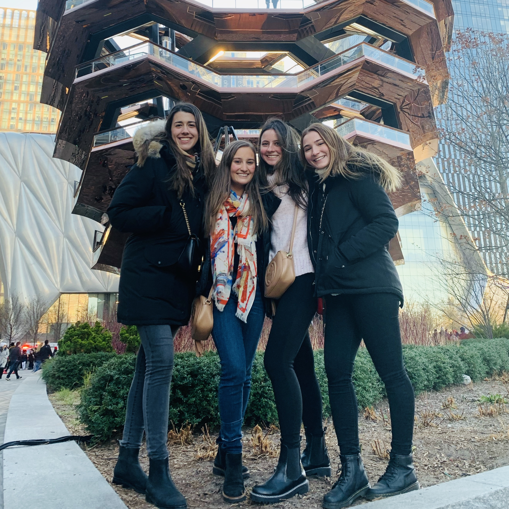
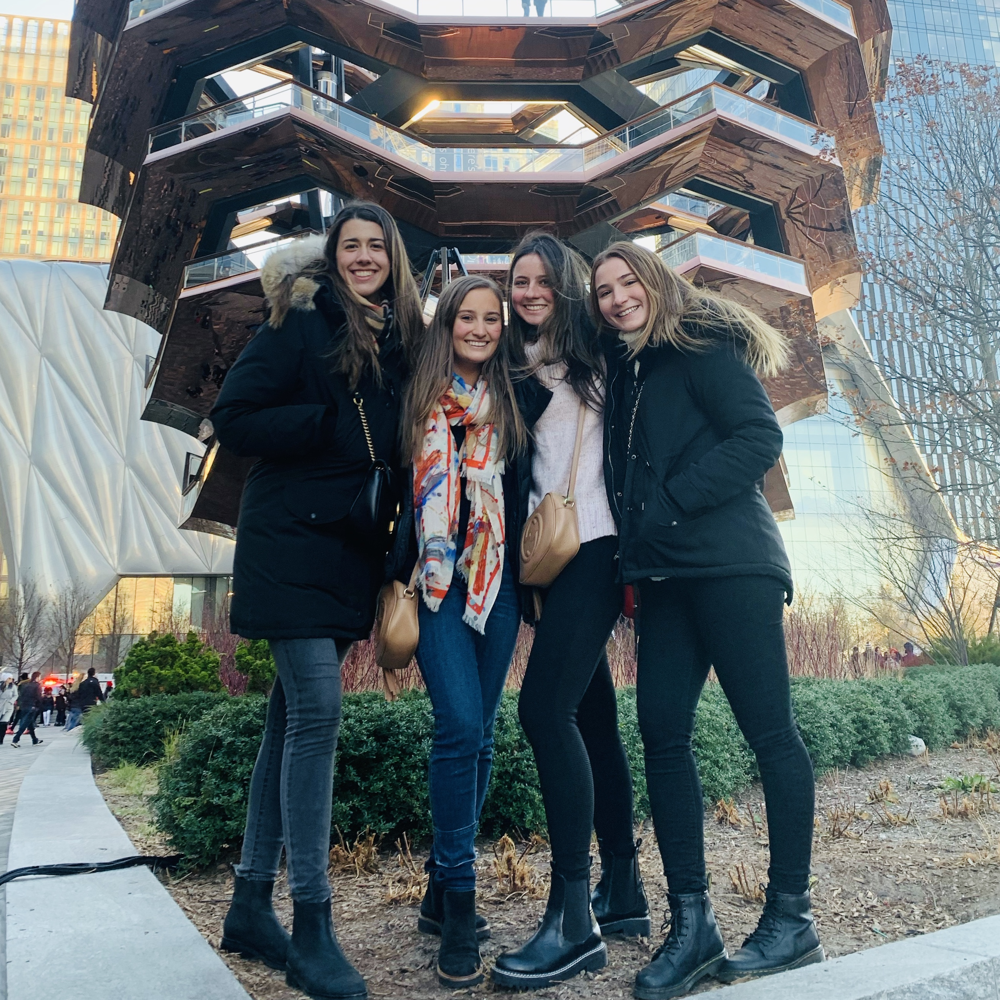

Home || More Info
Who am I?
My name is Patricia Galindo. I am an international student at the University of Texas at Austin, completing a major in psychology and a minor in business. I am also part of an organization, created by Latinos at UT, called LEBA, which stands for Latin Economics and Business Association. Outside of school, I enjoy hanging out with my friends, going to social events, and getting to know better the city of Austin (which I love). I also really like to stay active and healthy by going to the gym; and I enjoy other hobbies such as drawing, dancing, and playing golf. On vacation breaks, I go back to my home country, Panama, and spent time with my family and local friends.
 


My Work Experience
Favorite links to websites I frequent
- I am currently obsessed with pinterest
- YouTube has always been one of the most entertaining sites for me!
- LEBA's website - the organization I am part of in UT
Contact me via links below
pattygalindo18@utexas.edupattygalindo0218@gmail.com
My Linked In Profile